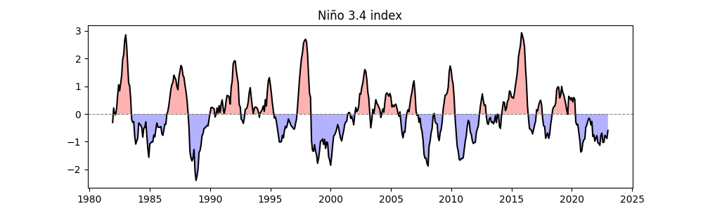
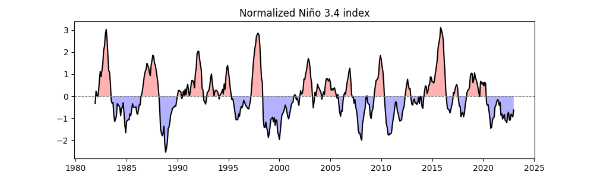
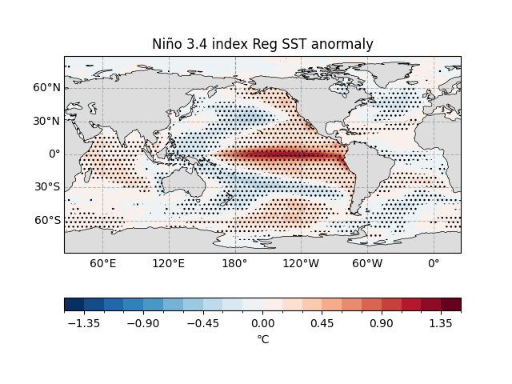
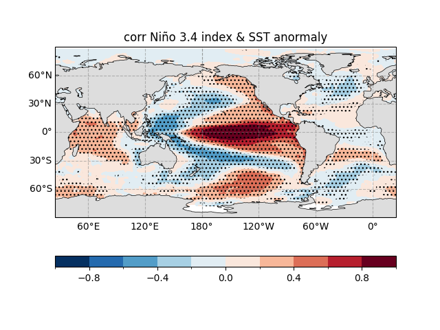

Note
Go to the end to download the full example code.
Regression and Correlation Analyses¶
Want to dive into the mysteries of climate science using Python? Today, we’ll walk through a piece of code to explore the impact of El Niño-Southern Oscillation (ENSO) on global sea surface temperature (SST)! This code is simple, beginner-friendly, and perfect for anyone curious about climate science! 😄 Whether you’re learning data analysis or eager to uncover the secrets of climate change, this tutorial will leave you inspired and empowered! 🎉
We’ll use Python’s easyclimate library, along with xarray, matplotlib, and cartopy, to step through the code, create stunning visualizations, and reveal how ENSO influences global sea temperatures! In particular, we’ll dive deep into regression analysis, using the easyclimate.calc_corr_spatial function, and explain the math behind it! 📐 Ready to get started? Let’s dive in! 🚀
Background: What is Regression Analysis?¶
Before we jump into the code, let’s talk about regression analysis, the core tool of this tutorial! Regression analysis is a statistical method used to study relationships between variables, particularly how a dependent variable (e.g., sea temperature anomalies) changes with an independent variable (e.g., ENSO index). 🌡️ In climate science, it helps us explore how ENSO “drives” global sea temperatures!
> Ensure data is preprocessed, e.g., by removing the seasonal cycle to focus on non-seasonal variability.
Steps of Regression Analysis¶
In regression analysis, we assume a linear relationship between the dependent variable \(y(t)\) (e.g., sea temperature anomaly at a grid point) and the independent variable \(x(t)\) (e.g., Niño 3.4 index), expressed as:
\(\hat{y}(t)\): Predicted sea temperature anomaly.
\(a_1\): Regression coefficient (slope), indicating how much \(y(t)\) changes per unit change in \(x(t)\).
\(a_0\): Intercept, the value of \(y(t)\) when \(x(t) = 0\).
To find the optimal \(a_1\) and \(a_0\), we use the least squares method to minimize the sum of squared errors between predicted and actual values:
By taking partial derivatives with respect to \(a_0\) and \(a_1\) and setting them to zero, we get:
Given \(\bar{x} = \frac{1}{N} \sum_{i=1}^N x(i)\), we have:
Solving these equations yields the slope \(a_1\) and intercept \(a_0\):
This gives us the best-fitting line using the least squares method. Typically, \(a_1\) is expressed in terms of deviations from the mean. To do this, we decompose \(x(t)\) and \(y(t)\) into their time mean and deviations:
From this, we derive:
Using these and the formula for \(a_1\), we get:
\(\text{Cov}(x, y)\): Covariance of \(x(t)\) and \(y(t)\), measuring how they vary together.
\(\text{Var}(x)\): Variance of \(x(t)\), measuring its own variability.
\(\bar{x}\), \(\bar{y}\): Means of \(x(t)\) and \(y(t)\).
The slope \(a_1\) indicates the expected change in \(y(t)\) per unit change in \(x(t)\).
Relationship Between Correlation and Regression Coefficients¶
In regression analysis, we also calculate the correlation coefficient \(r\) to measure the strength of the linear relationship:
- \(r\) ranges from \([-1, 1]\):
\(r = 1\) indicates perfect positive correlation.
\(r = -1\) indicates perfect negative correlation.
\(r = 0\) indicates no linear relationship.
The relationship between \(a_1\) and \(r\) is:
If \(x(t)\) is standardized (mean = 0, standard deviation = 1), then \(\text{Var}(x) = 1\), and \(a_1 = r \cdot \sqrt{\text{Var}(y)}\).
Significance Testing¶
To assess the reliability of the regression results, we use the \(t\)-statistic to test the significance of the correlation coefficient:
\(N\): Sample size (length of the time series).
The p-value is calculated from the \(t\)-statistic. A \(p\)-value < 0.05 (or 0.01) indicates significance at the 95% (or 99%) confidence level.
Note
Regression analysis is like finding the “best-fit line” to show how sea temperatures “follow” the ENSO index!
The correlation coefficient \(r\) tells you how “close” the relationship is.
The \(p\)-value tells you if it’s “real”! 😉
Preparation: Importing Required Libraries¶
import easyclimate as ecl
import xarray as xr
import numpy as np
import matplotlib.pyplot as plt
import cartopy.crs as ccrs
import cartopy.feature as cfeature
easyclimate: A powerful climate analysis tool with functions like
easyclimate.calc_corr_spatialto streamline data processing! 🌍xarray: Ideal for handling multi-dimensional data (time, longitude, latitude).
numpy: The backbone for numerical computations.
matplotlib.pyplot: For plotting line graphs and maps.
cartopy: A professional library for geospatial visualizations, perfect for global maps! 🗺️
These libraries are your “climate lab” toolkit—let’s start experimenting! 💪
Loading Sea Surface Temperature Data¶
ecl.open_tutorial_dataset("sst_mnmean_oisst"): Loads a global sea surface temperature (SST) dataset with time, longitude, and latitude dimensions..sst: Extracts the sea temperature variable (units: °C).sst_data: Anxarray.DataArray, like a 3D “data cube”! 🧊
Note
SST stands for sea surface temperature. ENSO can make some regions warmer or cooler, affecting global weather! 🌦️
sst_data = ecl.open_tutorial_dataset("sst_mnmean_oisst").sst
sst_data
sst_mnmean_oisst.nc ━━━━━━━━━━━━━━━ 100.0% • 28.1/28.1 MB • 158.3 MB/s • 0:00:00
Removing the Seasonal Cycle to Extract Anomalies¶
easyclimate.remove_seasonal_cycle_mean: Removes seasonal variations (e.g., warmer summers, cooler winters) to get sea temperature anomalies, focusing on non-seasonal signals like ENSO.sst_data_anomaly: A new dataset containing only “unusual” temperature changes.
Note
Removing the seasonal cycle is like filtering out “background noise” to hear ENSO’s “solo performance”! 🎶
Heads up! ⚠️ If you don’t remove the seasonal cycle before correlation or regression analysis, most climate variables will show high correlations with distant regions—simply because they’re all influenced by the annual solar radiation cycle! 🌍☀️ Pretty cool, right?
Calculating the Niño 3.4 Index¶
Calculating the Niño 3.4 Index:
easyclimate.field.air_sea_interaction.calc_index_nino34: Computes the Niño 3.4 index from sea temperature anomalies in the eastern tropical Pacific (5°S–5°N, 170°W–120°W), measuring ENSO strength.running_mean = 0: Uses raw data without smoothing.
Plotting the Line Graph:
plt.figure(figsize=(10, 3)): Creates a canvas 10 units wide and 3 units high.easyclimate.plot.line_plot_with_threshold: Plots the Niño 3.4 index time series.plt.title: Sets the title to “Niño 3.4 index”.
Note
The Niño 3.4 index is like a “weather gauge” for ENSO—positive values indicate El Niño (warm), and negative values indicate La Niña (cool). 📈
nino34_index = ecl.field.air_sea_interaction.calc_index_nino34(
sst_data,
running_mean = 0
)
plt.figure(figsize=(10, 3))
ecl.plot.line_plot_with_threshold(nino34_index)
plt.title("Niño 3.4 index")

/home/runner/work/easyclimate/easyclimate/src/easyclimate/core/utility.py:663: UserWarning: It seems that the input data longitude range is not from -180° to 180°. Please carefully check your data.
warnings.warn(
Text(0.5, 1.0, 'Niño 3.4 index')
Standardizing the Niño 3.4 Index¶
For the next steps, if we perform linear regression between the SST anomaly time series \(y(t)\) at each global grid point and the standardized ENSO index \(x(t)\), we calculate the regression coefficient \(a_1\):
Since \(x(t)\) is standardized, \(\mathrm{Var}(x) = 1\), so \(a_1\) directly reflects the covariance, with units of \(\frac{\text{ K (local SST change) }}{ \sigma \text{(ENSO index)} } = \mathrm{K}\).
easyclimate.normalized.timeseries_normalize_zscore: Standardizes the Niño 3.4 index (mean = 0, standard deviation = 1) using:
Plots the standardized time series with the title “Normalized Niño 3.4 index”.
Note
Standardization puts the index in “standard units,” making it easier to compare and use in regression analysis! 📏
nino34_index_normalized = ecl.normalized.timeseries_normalize_zscore(nino34_index)
plt.figure(figsize=(10, 3))
ecl.plot.line_plot_with_threshold(nino34_index_normalized)
plt.title("Normalized Niño 3.4 index")

Text(0.5, 1.0, 'Normalized Niño 3.4 index')
Calculating Correlation Between SST Anomalies and Niño 3.4 Index¶
ecl.calc_corr_spatial: Performs regression analysis between global SST anomalies (sst_data_anomaly) and the standardized Niño 3.4 index (nino34_index_normalized).Output:
sst_reg_nino34_result, containing:reg_coeff: Regression coefficient, in units of °C per standard deviation of the index.corr: Correlation coefficient, ranging from \([-1, 1]\).pvalue: Significance p-value.
Note
This step is like giving global sea temperatures a “check-up” to see which regions are closely tied to ENSO! 🔍
Regression Coefficient Map¶
Base Map:
quick_draw_spatial_basemapcreates a global map centered at 205° longitude.Regression Coefficient Plot:
reg_coeff.plot.contourfvisualizes the amplitude of SST changes (°C) per standard deviation change in the Niño 3.4 index.Significance Markers:
draw_significant_area_contourfhighlights areas with \(p < 0.01\).Land: Adds gray landmasses, with the title indicating regression results.
The map shows the global SST anomaly regressed onto the standardized ENSO index, displayed as a spatial distribution of SST anomalies in units of K.
fig, ax = ecl.plot.quick_draw_spatial_basemap(central_longitude=205)
sst_reg_nino34_result.reg_coeff.plot.contourf(
ax = ax,
levels = np.linspace(-1.5, 1.5, 21),
transform = ccrs.PlateCarree(),
cbar_kwargs={"location": "bottom", "aspect": 30, "label": "℃"},
)
ecl.plot.draw_significant_area_contourf(
sst_reg_nino34_result.pvalue,
thresh = 0.01,
ax = ax,
transform = ccrs.PlateCarree(),
)
ax.add_feature(cfeature.LAND, facecolor = '#DDDDDD', zorder = 1)
ax.set_title("Niño 3.4 index Reg SST anormaly")

Text(0.5, 1.0, 'Niño 3.4 index Reg SST anormaly')
In the eastern tropical Pacific (20°N–20°S, 160°E to South American coast), a one-standard-deviation increase in the ENSO warm phase (or cold tongue) index corresponds to significant positive SST anomalies, exceeding 1 K in the eastern tropical Pacific.
In the western tropical Pacific, SST anomalies are near 0 K, indicating minimal ENSO influence.
In the North Pacific, the ENSO warm phase corresponds to negative SST anomalies of about -0.2 K, indicating cooler temperatures.
The regression coefficients largely reflect the spatial pattern of global SST changes during the ENSO warm phase.
The regression coefficients show the magnitude of change but do not indicate statistical significance. Significance can be assessed by plotting confidence levels (e.g., 95%).
Note
Linear Assumption
Regression analysis is a linear method 📈. In the example above, the cold phase of the ENSO cycle (La Niña) is assumed to exhibit a pattern exactly opposite to the anomalies shown in the regression results. It’s like playing a “mirror symmetry” game!
To capture more complex non-linear relationships 🤹♂️ between ENSO and global SST anomalies, scientists often perform composite analysis (i.e., averaging separately for warm (El Niño) and cold (La Niña) events) to reveal their distinct characteristics.
Causality
Regression analysis only reveals statistical associations, not causation 🔗 ≠ 🧪.
In the example, North Atlantic SST anomalies may be a remote “response” or “result” of tropical climate anomalies, as determined by numerical simulations. However, regression results alone cannot determine cause and effect—interpret with caution! ⚠️
Effective Sample Size
The significance of correlations depends on the “effective sample size” 🧠, which is almost always smaller than the number of data points used in the analysis.
For example 🌰: A 50-year record of monthly mean Atlantic basin SST anomalies might seem to have \(50 \\cdot 12 = 600\) time points, but due to the strong “memory” (persistence) of regionally averaged SSTs, the number of truly independent samples may be much smaller!
So, when interpreting correlations based on limited sample sizes, stay cautious and critical—numbers can be deceptive! 🕵️♀️
Note
This map shows where sea temperatures rise (red) or fall (blue) when ENSO “acts up”! 🌡️
Correlation Coefficient Map¶
Similar to above, but plots the correlation coefficient map, showing the strength of the relationship between SST and the ENSO index (-1 to 1).
Title changed to “corr Niño 3.4 index & SST anomaly”.
Note
This map highlights the “connection strength” between ENSO and sea temperatures—red means they “move together,” blue means they “move opposite”! 😎
fig, ax = ecl.plot.quick_draw_spatial_basemap(central_longitude=205)
sst_reg_nino34_result.corr.plot.contourf(
ax = ax,
levels = np.linspace(-1, 1, 11),
transform = ccrs.PlateCarree(),
cbar_kwargs={"location": "bottom", "aspect": 30, "label": ""},
)
ecl.plot.draw_significant_area_contourf(
sst_reg_nino34_result.pvalue,
thresh = 0.01,
ax = ax,
transform = ccrs.PlateCarree(),
)
ax.add_feature(cfeature.LAND, facecolor = '#DDDDDD', zorder = 1)
ax.set_title("corr Niño 3.4 index & SST anormaly")

Text(0.5, 1.0, 'corr Niño 3.4 index & SST anormaly')
Summary: What Did We Learn?¶
Through this code, we embarked on a climate science adventure! 🌍 We:
Loaded and preprocessed SST data to extract anomalies.
Calculated and standardized the Niño 3.4 index, plotting its time series.
Used
easyclimate.calc_corr_spatialto analyze the relationship between global SSTs and ENSO, obtaining regression coefficients, correlation coefficients, and p-values.Created two maps showing the amplitude and strength of ENSO’s impact on SSTs.
Pro Tips¶
The regression coefficient \(a_1\) shows the “actual impact” of ENSO changes on SST anomalies (°C), while the correlation coefficient \(r\) shows the “strength of the connection.”
easyclimate.calc_corr_spatialefficiently handles multi-dimensional data, automatically skipping NaN values, making it ideal for large-scale climate analysis.Areas with \(p < 0.01/0.05\) are “rock-solid” results worth focusing on! 🔥
Beginner Tips¶
ENSO is like the ocean’s “mood,” affecting global climate, and this code helps you “hear” its story! 😉
Want to go deeper? Check the easyclimate documentation or try other climate indices!
Run the code and explore the wonders of climate science! 🚀
Total running time of the script: (0 minutes 18.045 seconds)